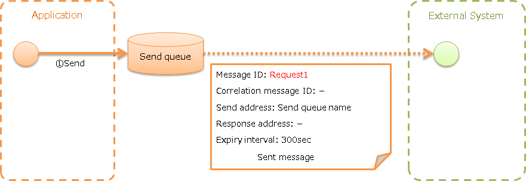
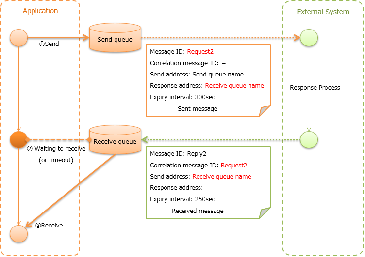
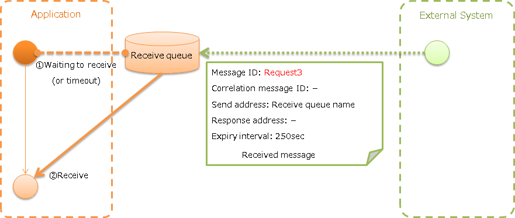
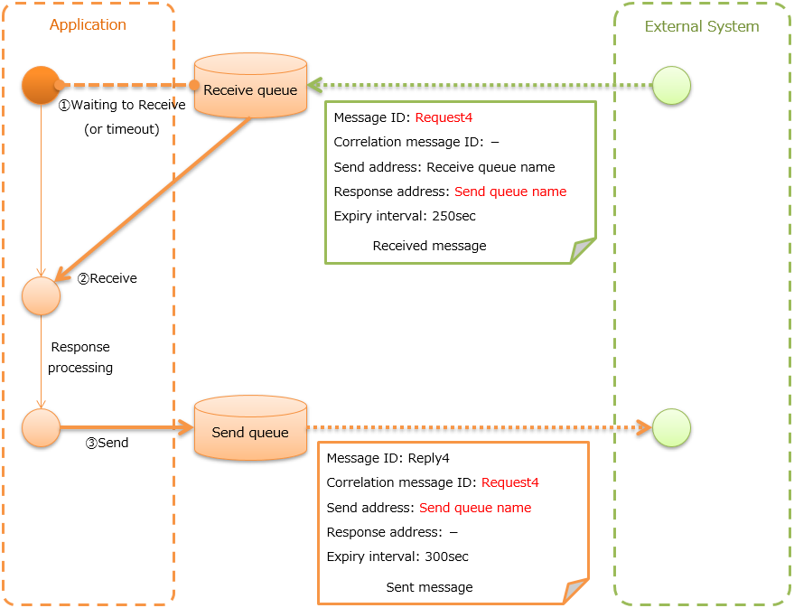
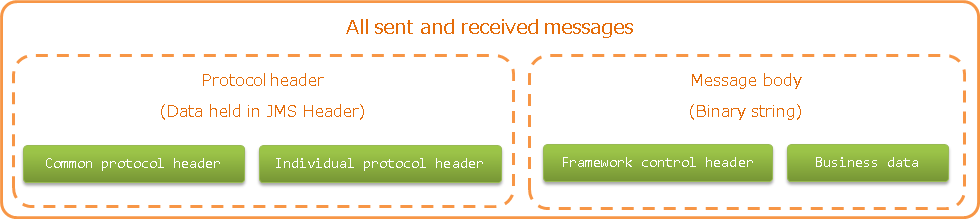

7.6.1. MOM Messaging¶
Table of contents
- Function overview
- Module list
- How to use
- Configure settings to use MOM messaging
- Send message with asynchronous response (Sending asynchronous message)
- Send message with synchronous response (Sending synchronous message)
- Receive message with asynchronous response (Receiving asynchronous message)
- Receive message with synchronous response (Receiving synchronous message)
- Expansion example
- Data model of sent and received messages
Provides a function to send and receive messages using MOM. In this chapter, the message queue used for MOM messaging is referred to as MQ.
The data model shown in Data model of sent and received messages is assumed for MOM messaging. Also, General Data Format is used for the message format.
Important
In the Data model of sent and received messages, the framework control header is an item specified independently by Nablarch, and it is assumed to be included in the message body.
There is no problem if the message format can be designed in the project, but the requirement may not be met if the message format is already specified by the external system.
Such cases must be supported by adding the implementation in the project by referring to Change the reading and writing of the framework control header.
The assumed execution control platform differs for MOM messaging depending on the type of send and receive.
| Type of send and receive | Execution control platform |
|---|---|
| Sending asynchronous message | Nablarch Batch Application |
| Sending synchronous message | Does not depend on the execution control platform |
| Receiving asynchronous message | Messaging with MOM |
| Receiving synchronous message | Messaging with MOM |
7.6.1.1. Function overview¶
7.6.1.1.1. Compatible with various MOMs¶
Since MOM messaging various MOMs, the MessagingProvider interface is provided. MQ connection that depends on MOM and message send/receive are performed by the class that implements this interface. Therefore, this function can be used in various MOMs by creating a class that implements the MessagingProvider interface.
MOM messaging is compatible with JMS and offers JmsMessagingProvider. For details, refer to the linked Javadoc.
It also supports WebSphere MQ, which is widely used as a MOM. For details, see IBM WebSphere MQ Adapter.
7.6.1.2. Module list¶
<dependency>
<groupId>com.nablarch.framework</groupId>
<artifactId>nablarch-fw-messaging</artifactId>
</dependency>
<dependency>
<groupId>com.nablarch.framework</groupId>
<artifactId>nablarch-fw-messaging-mom</artifactId>
</dependency>
7.6.1.3. How to use¶
7.6.1.3.1. Configure settings to use MOM messaging¶
In MOM messaging, add the following classes to the component definition.
- Implementation class MessagingProvider (MQ connection, MQ send to/receive from)
- Messaging Context Management Handler (MQ connection management)
A configuration example is shown below.
<!-- Implementation class of MessagingProvider -->
<component name="messagingProvider"
class="nablarch.fw.messaging.provider.JmsMessagingProvider">
<!-- See Javadoc for configuration items-->
</component>
<!-- Messaging context management handler -->
<component name="messagingContextHandler"
class="nablarch.fw.messaging.handler.MessagingContextHandler">
<property name="messagingProvider" ref="messagingProvider" />
</component>
In the case of messages are received, it is necessary to set the data reader. Add the following class to the component definition.
- MessageReader (reads messages from MQ)
- FwHeaderReader (reads the framework control header from the message)
A configuration example is shown below.
- Point
- Specify
dataReaderin the component name of the data reader. - Specify MessageReader in the messageReader property of FwHeaderReader.
- Specify
<!-- FwHeaderReader -->
<component name="dataReader"
class="nablarch.fw.messaging.reader.FwHeaderReader">
<!-- MessageReader -->
<property name="messageReader">
<component class = "nablarch.fw.messaging.reader.MessageReader">
<!-- See Javadoc for configuration items-->
</component>
</property>
</component>
7.6.1.3.2. Send message with asynchronous response (Sending asynchronous message)¶
Send a message to an external system.
{kind=link}
- Contents of Common protocol header Common protocol header configured in send message
Basically, only the send address header needs to be set.
Message ID: Configuration not required (numbered after sending) Correlation message ID: Configuration not required Send address: Logical name of the send address Reply to address: Configuration not required Expiry interval: Any
Sending asynchronous message provides AsyncMessageSendAction as a common action to acquire the data to be sent from the table (called a temporary table) held by the send message data, and create and send messages. AsyncMessageSendAction is an action class that works with Nablarch Batch Application.
Tip
Registration of the send message in the temporary table is assumed to be done using Database Access with Web Application or Batch Application.
Only the following deliverables are required to be created using AsyncMessageSendAction and the message send process can be implemented very easily.
- Temporary table that holds the data of send message
- Format definition file that represents the message layout
- SQL file (defines three types of SQL statements)
- SELECT statement for acquiring data with not sent status
- UPDATE statement to update the status of the relevant data to processed when the message is sent successfully
- UPDATE statement for updating the status of the relevant data to send failure when the message send fails
- Form class for status update
Tip
The only properties required for the form class are those that correspond to the table items required for status update. As a result, by defining a common table layout of the temporary table for the project, a single form class can be used in all sending asynchronous message.
Below is an implementation example based on Example application to send project information.
- Implementation examples
-
- Temporary table that holds the data of send message
- Point
- The primary key is the column that stores the ID that uniquely identifies the message.
- The attribute information of the table defines the columns corresponding to each item of the message to be sent.
- Define common items (update user ID, update date, etc.) according to each project architecture.
- INS_PROJECT_SEND_MESSAGE
Send message serial number (PK) SEND_MESSAGE_SEQUENCE Project name PROJECT_NAME Project type PROJECT_TYPE Project classification PROJECT_CLASS : (Omitted) Status STATUS Update user ID UPDATED_USER_ID Update date and time UPDATED_DATE
- Format definition file
- Point
- The file name is
<Request ID of send message>_SEND.fmt.
- The file name is
- ProjectInsertMessage_SEND.fmt
file-type: "Fixed" # Fixed-length text-encoding: "MS932" # Character encoding of string type field record-length: 2120 # Length of each record [userData] Item definition omitted
- SQL file
- Point
- The file name is
<Request ID of send message>.sql. - SQL_ID is as follows.
SELECT_SEND_DATA: SELECT statement for acquiring data with not sent statusUPDATE_NORMAL_END: UPDATE statement to update the status to processedUPDATE_ABNORMAL_END: UPDATE statement to update the status to send failure
- The file name is
- ProjectInsertMessage.sql
SELECT_SEND_DATA = SELECT Omitted FROM INS_PROJECT_SEND_MESSAGE WHERE STATUS = '0' ORDER BY SEND_MESSAGE_SEQUENCE UPDATE_NORMAL_END = UPDATE INS_PROJECT_SEND_MESSAGE SET STATUS = '1', UPDATED_USER_ID = :updatedUserId, UPDATED_DATE = :updatedDate WHERE SEND_MESSAGE_SEQUENCE = :sendMessageSequence UPDATE_ABNORMAL_END = UPDATE INS_PROJECT_SEND_MESSAGE SET STATUS = '9', UPDATED_USER_ID = :updatedUserId, UPDATED_DATE = :updatedDate WHERE SEND_MESSAGE_SEQUENCE = :sendMessageSequence
- Form class for status update
- Point
- Since this form class is for status update only, all the attributes of the temporary table are not required to be retained as properties.
- SendMessagingForm.java
public class SendMessagingForm { /** Send message serial number */ private String sendMessageSequence; /** Update user ID */ @UserId private String updatedUserId; /** Update date and time */ @CurrentDateTime private java.sql.Timestamp updatedDate; // Constructor and accessor are omitted }
- Configuration of AsyncMessageSendAction
- Point
- When AsyncMessageSendAction is used, configuration of queue name of send destination and storage directory of format definition file are required. Configured by adding AsyncMessageSendActionSettings to the component definition. For the configuration items, refer to the Javadoc link.
- messaging-async-send-component-configuration.xml
<component name="asyncMessageSendActionSettings" class="nablarch.fw.messaging.action.AsyncMessageSendActionSettings"> <property name="formatDir" value="format" /> <property name="headerFormatName" value="header" /> <property name="queueName" value="TEST.REQUEST" /> <property name="sqlFilePackage" value="com.nablarch.example.sql" /> <property name="formClassName" value="com.nablarch.example.form.SendMessagingForm" /> <property name="headerItemList"> <list> <value>sendMessageSequence</value> </list> </property> </component>
- Applying AsyncMessageSendAction
- Point
- To make AsyncMessageSendAction work with Nablarch Batch Application, specify AsyncMessageSendAction in the component definition of Request Dispatch Handler.
- messaging-async-send-component-configuration.xml
<component class="nablarch.fw.handler.RequestPathJavaPackageMapping"> <property name="basePackage" value="com.nablarch.example.action.ExampleAsyncMessageSendAction" /> <property name="immediate" value="false" /> </component>
7.6.1.3.3. Send message with synchronous response (Sending synchronous message)¶
Send a message to an external system and wait for the reply. Block until a response message is received or the wait timeout expires.
{kind=link}
Since a response message is received unlike Send message with asynchronous response (Sending asynchronous message), it can be guaranteed to some extent that the process worked correctly at the destination. However, if a response is not received within the specified time due to some problem and a timeout occurs, it is necessary to perform error processing (for example, message retry or failure notification).
- Contents of Common protocol header configured in send message
In addition to the send address header, it is necessary to set the reply to address header, which is the send address for the response.
Message ID: Configuration not required (numbered after sending) Correlation message ID: Configuration not required Send address: Logical name of the send address Reply to address: Logical name of reply to address Expiry interval: Any - Content of Common protocol header of response message created by the external system
After the send process is completed, the application waits until a message with the same correlation message ID as that of the send message is received at the reply to address. Therefore, the external system must configure the correlation message ID in the response message.
Message ID: Configuration not required (numbered after sending) Correlation message ID: Value of message ID header of send message Send address: Reply to address header of send message Reply to address: Configuration not required Expiry interval: Any
Sending synchronous message provides MessageSender as a utility class that wraps routine processing. Only the following deliverables are required to be created using MessageSender and the send synchronous response message can be created very easily.
- Format definition file used to send and receive
- Send/receive process with MessageSender
The following is an implementation example of sending project information by batch action from the data stored in the table based on Example application. Since the section to read data from the table is not related to sending of messages, the implementation example is omitted.
- Implementation examples
-
- Format definition file used to send and receive
- Point
- The file name is as follows.
- To send:
<Message request ID>_SEND.fmt - To receive:
<Message request ID>_RECEIVE.fmt
- The record type name is fixed to
data.
- ProjectInsertMessage_SEND.fmt
file-type: "Fixed" # Fixed-length text-encoding: "MS932" # Character encoding of string type field record-length: 2120 # Length of each record record-separator: "\r\n" # Carriage return and Line feed [data] Item definition omitted
- ProjectInsertMessage_RECEIVE.fmt
file-type: "Fixed" # Fixed-length text-encoding: "MS932" # Character encoding of string type field record-length: 130 # Length of each record record-separator: "\r\n" # Carriage return and Line feed [data] Item definition omitted
- Send/receive process using MessageSender
- Point
- Create the request message with SyncMessage.
- To send a message, use MessageSender#sendSync. For How to Use, refer to the linked Javadoc.
- SendProjectInsertMessageAction.java
public Result handle(SqlRow inputData, ExecutionContext ctx) { // Business process using input data is omitted SyncMessage responseMessage = null; try { responseMessage = MessageSender.sendSync( new SyncMessage("ProjectInsertMessage").addDataRecord(inputData)); } catch (MessagingException e) { // Send error throw new TransactionAbnormalEnd(100, e, "error.sendServer.fail"); } Map<String, Object> responseDataRecord = responseMessage.getDataRecord(); // Business process using response data is omitted return new Success(); }
- Configuration of MessageSender
- Point
- When MessageSender is used, configuration of queue name of send and receive destination and storage directory of format definition file are required. Configured by Set the dependent value. For configuration items, see MessageSenderSettings.
- messaging.config
messageSender.DEFAULT.messagingProviderName=defaultMessagingProvider messageSender.DEFAULT.destination=TEST.REQUEST messageSender.DEFAULT.replyTo=TEST.RESPONSE messageSender.DEFAULT.retryCount=10 messageSender.DEFAULT.formatDir=format messageSender.DEFAULT.headerFormatName=HEADER messageSender.DEFAULT.messageConvertorName=defaultSyncMessageConvertor
7.6.1.3.4. Receive message with asynchronous response (Receiving asynchronous message)¶
Receive a message that is sent to a specific destination. Block until a message is received or the wait timeout expires.
{kind=link}
- Content of common protocol header Common protocol header of received message created by the external system
Message ID: Configuration not required (numbered after sending) Correlation message ID: Configuration not required Send address: Logical name of the address Reply to address: Configuration not required Expiry interval: Any
Receiving asynchronous message provides AsyncMessageReceiveAction as a common action to save the received message in the temporary table (message receive table). AsyncMessageReceiveAction is an action class that works with Messaging with MOM.
Tip
Assumption is that the data stored in the temporary table will be imported to this table in the system using the Batch Application.
Only the following deliverables are required to be created using AsyncMessageReceiveAction and the messages can be saved in the table very easily.
- Temporary table to register the messages
- Format definition file that represents the message layout
- INSERT statement (SQL file) for registering a message
- Form class used to register a message
Below is an implementation example based on Example application to receive project information.
- Implementation examples
-
- Temporary table to register the messages
- Point
- Received messages are saved in a dedicated temporary table for each message type.
- The primary key is the column that stores the ID that uniquely identifies the message. The value to be stored in this column is numbered by the framework using Surrogate Key Numbering.
- The attribute information of the table defines the columns corresponding to each item of the message to be received.
- Define common items (registration user ID, registration date and time, etc.) according to each project architecture.
- INS_PROJECT_RECEIVE_MESSAGE
Receive message serial number (PK) RECEIVED_MESSAGE_SEQUENCE Project name PROJECT_NAME Project type PROJECT_TYPE Project classification PROJECT_CLASS : (Omitted) Status STATUS Registered user ID INSERT_USER_ID Registration date and time INSERT_DATE
- Format definition file
- Point
- The file name is
<Request ID of received message>_RECEIVE.fmt.
- The file name is
- ProjectInsertMessage_RECEIVE.fmt
file-type: "Fixed" # Fixed-length text-encoding: "MS932" # Character encoding of string type field record-length: 2120 # Length of each record [userData] Item definition omitted
- SQL file
- Point
- The file name is
<Request ID of received message>.sql. - SQL_ID is
INSERT_MESSAGE.
- The file name is
- ProjectInsertMessage.sql
INSERT_MESSAGE = INSERT INTO INS_PROJECT_RECEIVE_MESSAGE ( RECEIVED_MESSAGE_SEQUENCE, PROJECT_NAME, PROJECT_TYPE, PROJECT_CLASS, Below omitted
- Form class used to register a message
- Point
- The file name is
<Request ID of received message>Form. - Define a constructor with two arguments: String, RequestMessage.
The meaning of each parameter is as follows.
- String -> Received message serial number
- RequestMessage -> Received message
- The file name is
- ProjectInsertMessageForm.java
public class ProjectInsertMessageForm { /** Received message serial number */ private String receivedMessageSequence; /** Project name */ private String projectName; // Other fields are omitted public ProjectInsertMessageForm( String receivedMessageSequence, RequestMessage message) { this.receivedMessageSequence = receivedMessageSequence; DataRecord data = message.getRecordOf("userData"); projectName = data.getString("projectName"); // Subsequent process is omitted } // Accessor is omitted }
- Configuration of AsyncMessageReceiveAction
- Point
- When AsyncMessageReceiveAction is used, configuration of format definition file and SQL file location, etc. are required. Configured by adding AsyncMessageReceiveActionSettings to the component definition. For the configuration items, refer to the Javadoc link.
- messaging-async-receive-component-configuration.xml
<component name="asyncMessageReceiveActionSettings" class="nablarch.fw.messaging.action.AsyncMessageReceiveActionSettings"> <property name="formClassPackage" value="com.nablarch.example.form" /> <property name="receivedSequenceFormatter"> <component class="nablarch.common.idgenerator.formatter.LpadFormatter"> <property name="length" value="10" /> <property name="paddingChar" value="0" /> </component> </property> <property name="receivedSequenceGenerator" ref="idGenerator" /> <property name="targetGenerateId" value="9991" /> <property name="sqlFilePackage" value="com.nablarch.example.sql" /> </component>
- Applying AsyncMessageReceiveAction
- Point
- To make AsyncMessageReceiveAction work with Messaging with MOM, specify AsyncMessageReceiveAction in the component definition of Request Dispatch Handler.
- messaging-async-receive-component-configuration.xml
<component class="nablarch.fw.handler.RequestPathJavaPackageMapping"> <property name="basePackage" value="nablarch.fw.messaging.action.AsyncMessageReceiveAction" /> <property name="immediate" value="false" /> </component>
7.6.1.3.5. Receive message with synchronous response (Receiving synchronous message)¶
It receives a message sent to a specific destination from a communication destination, and sends a response message to the reply to address configured in the message. At this time, the value of the message ID header of the received message is configured in the correlation message ID header of the response message.
{kind=link}
Contents of Common protocol header configured in send message
Message ID: Configuration not required (numbered after sending) Correlation message ID: Value of message ID header of received message Send address: Value of the reply to address header of received message Reply to address: Configuration not required Expiry interval: Any
Receiving synchronous message provides MessagingAction as a template class that performs routine processing. MessagingAction is an action class that works with Messaging with MOM.
Only the following deliverables are required to be created by using MessagingAction.
- Format definition file that represents the message layout
- Process when a message is received and when an error occurs (action class)
Below is an implementation example based on Example application to receive project information.
- Implementation examples
-
- Format definition file
- Point
- The file name is as follows.
- To receive:
<Message request ID>_RECEIVE.fmt - To send:
<Message request ID>_SEND.fmt
- ProjectInsertMessage_RECEIVE.fmt
file-type: "Fixed" # Fixed-length text-encoding: "MS932" # Character encoding of string type field record-length: 2120 # Length of each record record-separator: "\r\n" # Carriage return and Line feed [data] Item definition omitted
- ProjectInsertMessage_SEND.fmt
file-type: "Fixed" # Fixed-length text-encoding: "MS932" # Character encoding of string type field record-length: 130 # Length of each record record-separator: "\r\n" # Carriage return and Line feed [data] Item definition omitted
- Process when a message is received and when an error occurs (action class)
- Point
Inherit MessagingAction and override the following method.
Create the response message with RequestMessage#reply.
To retain the contents of request/response message, create a form class corresponding to each.
- ProjectInsertMessageAction.java
public class ProjectInsertMessageAction extends MessagingAction { @Override protected ResponseMessage onReceive( RequestMessage request, ExecutionContext context) { ProjectInsertMessageForm projectInsertMessageForm = BeanUtil.createAndCopy( ProjectInsertMessageForm.class, request.getParamMap()); // Perform the validation process.ApplicationException is thrown when an error is detected. ValidatorUtil.validate(projectInsertMessageForm); ProjectTemp projectTemp = BeanUtil.createAndCopy( ProjectTemp.class, projectInsertMessageForm); // Data configuration is omitted UniversalDao.insert(projectTemp); // Returns response data ProjectInsertMessageResponseForm resForm = new ProjectInsertMessageResponseForm("success", ""); return request.reply().addRecord(resForm); } @Override protected ResponseMessage onError( Throwable e, RequestMessage request, ExecutionContext context) { if (e instanceof InvalidDataFormatException) { //Invalid request message data record section layout resForm = new ProjectInsertMessageResponseForm("fatal", "invalid layout."); } else if (e instanceof ApplicationException) { //Request message data record section item validation error resForm = new ProjectInsertMessageResponseForm("error.validation", ""); } else { resForm = new ProjectInsertMessageResponseForm("fatal", "unexpected exception."); } return request.reply().addRecord(resForm); } }
7.6.1.4. Expansion example¶
7.6.1.4.1. Change the reading and writing of the framework control header¶
In some cases, reading and writing of the framework control header may require to be changed when the message format is already defined in the external system. To support this, add the implementation in the project. The following shows the support method for each type of send and receive.
- For sending asynchronous message
Since writing of the framework control header is performed by the following method, support is provided by overriding the following method.
- For sending synchronous message
MessageSender delegates the conversion process to SyncMessageConvertor so the conversion process of sent and received messages can be changed, and this class reads and writes the framework control headers.
Therefore, create a class that inherits SyncMessageConvertor, and specify in the configuration of MessageSender. See MessageSenderSettings for the configuration of MessageSender.
- For receiving asynchronous message
The framework control header is read by a class that implements the FwHeaderDefinition interface configured in FwHeaderReader. StandardFwHeaderDefinition is used by default.
Therefore, referring to StandardFwHeaderDefinition, a class that implements the FwHeaderDefinition interface can be created in the project and specified as the FwHeaderReader#fwHeaderDefinition property in the component definition.
- For receiving synchronous message
Reading the framework control header is the same as receiving asynchronous message.
Even when writing framework control header, creating the class with the implementation of FwHeaderDefinition interface is the same, but the class created with component definition can be specified in the fwHeaderDefinition property of Message Response Control Handler.
7.6.1.5. Data model of sent and received messages¶
In MOM messaging, the contents of sent and received messages are expressed with the following data model.
{kind=link}
- Protocol header
- This header area mainly stores information used in message send and receive process of MOM. The protocol header can be accessed with the Map interface.
- Common protocol header
The following headers among the protocol headers used by the framework can be accessed with a specific key name. The key name is shown in parentheses.
- Message ID (MessageId)
String assigned by MOM for each message
Sending: Value assigned by MOM Receiving: The value issued by the sender MOM - Correlation message ID (CorrelationId)
Message ID of the message to which the message is related
Response message: Message ID of request message Resend request: Message ID of request message requesting the resend of response - Send address (Destination)
Logical name that represents the send address of the message
Sending: Logical name of the send queue Receiving: Logical name of the receive queue - Reply to address (ReplyTo)
Logical name that represents the address used when sending a response to this message
Sending: Logical name of the receive response queue for synchronous responses. Configuration not required if no response is required Receiving: Logical name of the reply to address queue for synchronous responses. Usually not configured if no response is required - Expiry interval (TimeToLive)
Expiry interval (msec) of message starting from the send process start point
Sending: Expiry interval of sent message Receiving: Not set
Tip
Headers other than the common protocol header can be defined arbitrarily in each messaging provider. Such headers are called individual protocol headers. For example, in the case of JMS messaging provider, all JMS headers, JMS extension headers and optional attributes are handled as individual protocol headers.
- Message body
The data area of the message excluding the protocol header is called the message body. As a general rule, MessagingProvider, which depends on MON, uses only the protocol header area. The other data areas are handled as unanalyzed simple binary data.
The message body is analyzed by General Data Format. This enables reading and writing the content of the message in Map format with the field name as a key.
- Framework control header
Many of the functions provided by this framework are designed on the assumption that specific control items are defined in the message. Such control items are called
framework control headers.The correspondence between the framework control header and the handler using it are as follows.
- Request ID
ID to identify the business process that should be executed by the application that received this message.
Main handlers that use this header:
- User ID
A character string that indicates the execution permission of this message
Main handlers that use this header:
- Resend request flag
Flag set when sending a resend request message
Main handlers that use this header:
- Status code
Code value that represents the processing result for the request message
Main handlers that use this header:
The framework control header must be defined with the following field names in the first data record of the message body by default.
Request ID: requestId User ID: userId Resend request flag: resendFlag Status code: statusCode The following is an example of a standard framework control header definition.
#=================================================================== # Framework control header part (50 bytes) #=================================================================== [NablarchHeader] 1 requestId X(10) # Request ID 11 userId X(10) # User ID 21 resendFlag X(1) "0" # Resend request flag (0: Initial send 1: Resend request) 22 statusCode X(4) "200" # Status code 26 ?filler X(25) # Reserve area #====================================================================
When items other than the framework control header are included in the format definition, the items can be accessed as optional header items of framework control header and used for the purpose of simple expansion of the framework control header for each project.
It is highly recommended to provide a reserve area to add headers that are required to manage optional items and framework functions that may be added in the future.